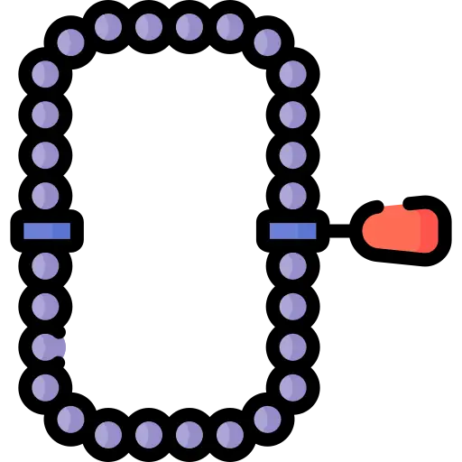

QuranKU
Lebih Mudah dan Simpel Dengan
QuranKU
Penuhi Kebutuhan Islamimu Setiap Hari Disini.
Akses Kapan Saja Dimana Saja
Mulai Sekarang
Pilih Kebutuhan Islamimu
Al-Quran
Asmaul Husna
Doa Harian
Hadits Rasul
Kisah Nabi & Rasul

Bacaan Tahlil
Sholawat Nabi
Bacaan Sholat
Waktu Sholat Daerah
Imsak
-
Subuh
-
Terbit
-
Dhuha
-
Dzuhur
-
Ashar
-
Maghrib
-
Isya'
-
Daftar Kota
Satu Ayat Untukmu
Kenapa Pakai QuranKU?
Dengan QuranKU kamu dapat belajar sekaligus memenuhi kebutuhan Islamimu seperti:
Mengetahui jadwal waktu sholat di Indonesia
Dapatkan kata-kata mutiara Islami
Membaca Al-Quran
Membaca Asmaul Husna
Membaca Doa-Doa Harian
Membaca Hadits-Hadits Rasulullah
Membaca Kisah 25 Nabi & Rasul
Membaca Bacaan Tahlil
Membaca sholawat-sholawat Nabi
Membaca Bacaan & Tuntunan Sholat
Mendapatkan pencerahan dari ayat-ayat Al-Quran
Untuk Siapa Saja QuranKU?
Masyarakat Umum
Kamu dapat mengakses QuranKU secara gratis, kapan saja dan dimana saja
Guru dan Siswa
Dapat dijadikan sebagai sumber pembelajaran agama Islam di sekolah
Traveler
Para traveler dapat mengetahui jadwal sholat ketika dalam perjalanan
Pengusaha dan Pekerja
QuranKU dapat menjadi alternatif dikala kesibukan bekerja, seperti membaca Al-Quran
Ingin Mengetahui Sumber API?
Saya memakai bantuan API ( data yang diambil untuk menampilkan menu Al-Quran ) dari beberapa penyedia API yaitu:
API Surah Al-Quran
( Klik Disini )
API Asmaul Husna
( Klik Disini )
API Bacaan Niat Shalat
( Klik Disini )
API Bacaan Sholat
( Klik Disini )
API Doa Harian
( Klik Disini )
API Hadist
( Klik Disini )
API Kisah Nabi & Rasul
( Klik Disini )
API Sholawat
( Klik Disini )
API Tahlil
( Klik Disini )
API Quotes Islam
( Klik Disini )
Jika menemukan error silahkan
hubungi developer
, terimakasih
بَلِّغُوا عَنِّى وَلَوْ آيَة
"Sampaikanlah dariku walau hanya satu ayat"